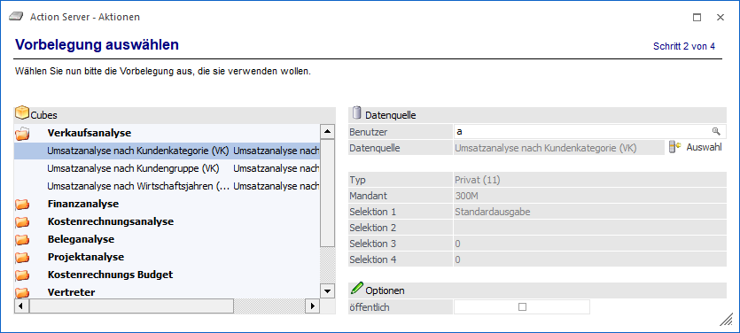

Aus der linken Tabelle, in welcher alle angelegten Cube-Definitionen mit vorhandenen Objektberechtigungen angezeigt werden, kann der gewünschte Cube ausgewählt werden. Da das Datenmaterial für eine Cube-Ausgabe immer aus einer Datenquelle stammt, steht im rechten Bereich des Fensters eine entsprechende Auswahl zur Verfügung.
Ø Benutzer
Grundsätzlich kann jeder Benutzer nur Datenquellen für sich selbst erstellen / aktualisieren. Ein Administrator bzw. ein Datenadministrator hingegen kann an dieser Stelle festlegen, für welchen User (und somit auch mit welchen Berechtigungen) die Erstellung / Aktualisierung durchgeführt werden soll.
Hinweis
Wird an dieser Stelle ein abweichender Benutzer hinterlegt, so wird auch der "Datenquellen - Matchcode" im Kontext jenes Benutzers geöffnet.
Ø Datenquelle auswählen
Durch Anwahl dieses Buttons wird der "Datenquellen - Matchcode" geöffnet, über welchen angegeben werden kann, welcher Snapshot erstellt bzw. aktualisiert werden soll.
Hinweis
Bei der Auswahl der Datenquelle handelt es sich um eine Pflichtangabe. D.h. wurde keine Datenquelle gewählt und es wird der Button "Vor" gedrückt, so wird das Fenster "Datenquellen - Matchcode" automatisch geöffnet.
Ø öffentlich
An dieser Stelle kann definiert werden, ob eine private (Option ist nicht aktiviert) oder eine öffentliche (Option ist aktiviert) Datenquelle erzeugt / aktualisiert werden soll.
Diese Auswahlmöglichkeit steht nur zur Verfügung, wenn es sich bei dem aktuellen Benutzer um einen Volladministrator oder um einen Benutzer mit dem Teiladministrationsrecht "Datenadministration" handelt. Bei allen anderen Benutzern wird die Option automatisch über die ausgewählte Datenquelle definiert.
Nach der Definition der Aktionsdetails erfolgt im nächsten Schritt die Angabe zu "Benutzer und Mandant".